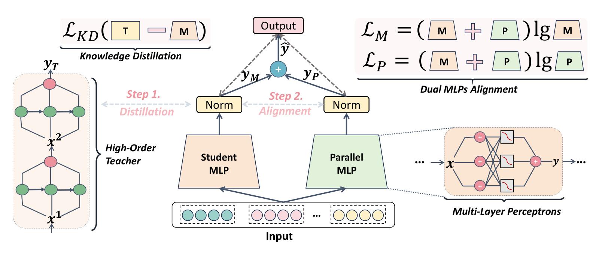
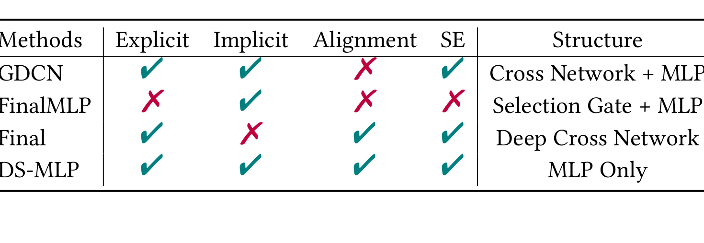
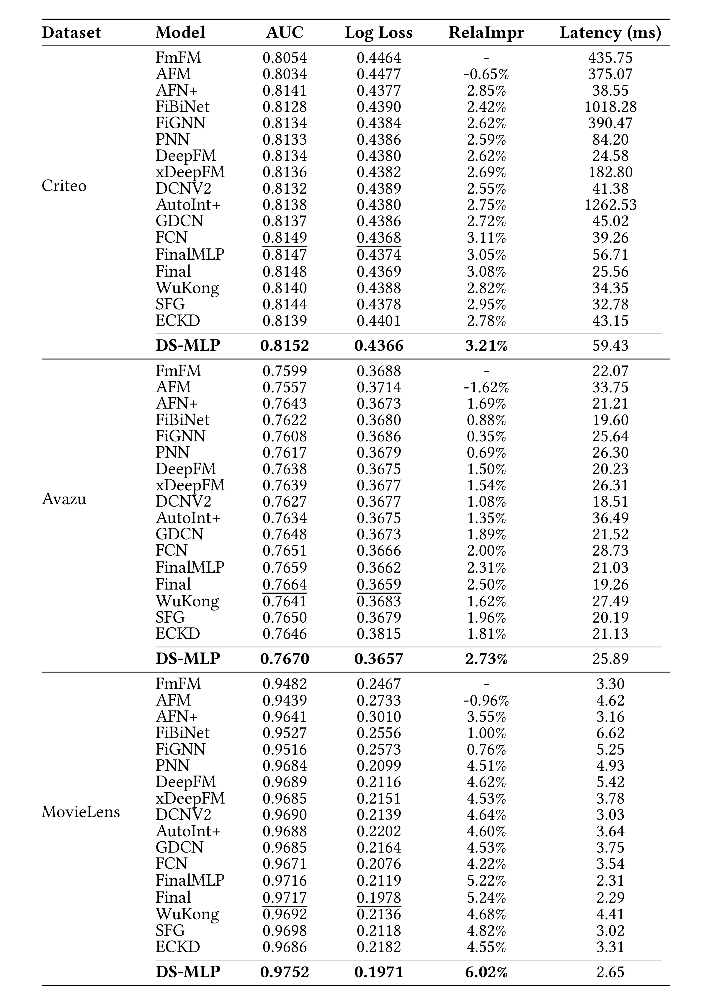
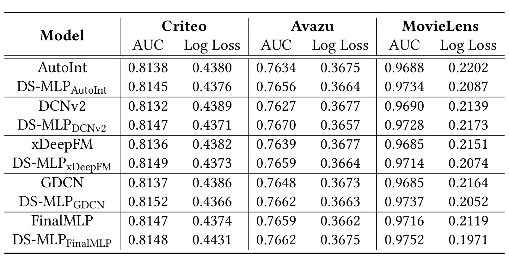
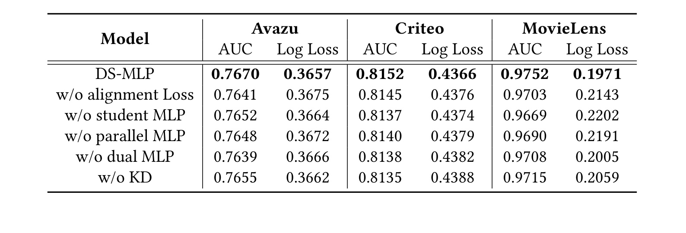

这篇论文讨论 CTR 预估里最核心也最容易被工程复杂度吞掉的问题：多字段稀疏特征之间的交互到底要不要用复杂显式结构反复枚举，还是可以把强模型已经学到的交互能力迁移到更简单、更容易部署的 MLP 里。论文的一作主机构是中国人民大学高瓴人工智能学院，合作机构包括字节跳动和美团。论文入口链接：arXiv:2606.04944。代码项目页已核验为 RUCAIBox/DS-MLP：<https://github.com/RUCAIBox/DS-MLP>。主类别是推荐算法，具体任务是 CTR prediction，关键词包括 feature interaction、knowledge distillation、dual-stream MLP 和 recommender systems。
1. 背景和问题
CTR 预估的输入通常不是连续语义向量，而是用户、物品、广告、上下文、设备、时间等多字段特征拼成的稀疏高维向量。模型要判断一次曝光是否会被点击，本质上不是只看单个字段的强弱，而是要判断字段之间的组合是否有意义。例如同一个用户类目偏好，在不同广告类目、不同时间段、不同设备和不同创意素材下会产生不同点击概率；单个 field 的 embedding 只能表达局部偏好，真正决定排序质量的是跨字段 interaction。论文从这个传统问题出发，把 CTR 模型里的交互学习分成两类：显式交互和隐式交互。显式交互指模型用内积、外积、Hadamard product、CrossNet、CIN、gated cross 等结构明确构造特征组合；隐式交互指把拼接后的特征送入 MLP，让非线性层自动学习潜在组合。
过去几年 CTR 模型很自然地走向双流结构：一条流负责显式交叉，一条流负责隐式深层融合，最后把两个输出相加或拼接。DeepFM、xDeepFM、DCNv2、GDCN、FinalMLP 等工作都在这个方向上做过不同设计。显式流的优点是 inductive bias 强，能把“字段 A 和字段 B 同时出现”这类组合直接建模；缺点是阶数一高就容易带来组合爆炸、参数搜索困难和推理成本。隐式流的优点是结构统一、硬件友好、扩展宽度和深度比较直接；缺点是它不保证学到的组合就是业务上需要的显式交叉，也缺少对高阶组合的确定性约束。论文的问题意识并不是简单地说复杂模型不好，而是指出复杂显式流和 MLP 隐式流在真实融合时会产生两个更具体的矛盾。
第一是高复杂度。CTR 场景里的字段数可以到几十、上百，特征取值可以到百万级甚至更高。显式枚举二阶、三阶或更高阶交互时，组合空间会快速膨胀。即使模型没有真的枚举全部组合，CrossNet、CIN、gated cross 或 attention 也会引入额外结构、额外超参数和额外优化路径。复杂结构一方面会增加在线推理延迟，另一方面也会让调参变难：不同数据集的 field 数、稀疏度、长尾分布和正负样本比例差异很大，一个复杂交互模块在 Criteo 上可用，不代表换到 Avazu 或 MovieLens 后仍然稳定。
第二是融合不平衡。很多双流 CTR 模型把显式流输出和隐式流输出直接相加。这个操作看起来对称，但两个分支的数值尺度、学习速度和归纳偏置并不对称。论文特别强调，类似 GDCN 的显式交叉用 Hadamard product 叠加高阶结构，随着阶数增加，显式流输出的数值范围可能被放大；而 MLP 隐式流经过 ReLU 等激活后，输出范围更容易被压住。最终预测如果只是两个 logits 相加，显式流就可能在某些样本上压过隐式流，导致隐式分支的贡献被遮蔽。这会让模型看似拥有双流，实际却退化成一个由显式交叉支配的模型。
DS-MLP 的核心动机就是反过来问：既然复杂 teacher 已经能学显式高阶交互，能不能先让一个 main MLP 通过知识蒸馏吸收这种显式交互能力，再用另一个 parallel MLP 专门补足被 teacher 偏置遮掉的隐式交互？这样最终模型仍然是两个 MLP，而不是显式 CrossNet 加隐式 DNN 的异构组合。论文的题目 “MLP is All You Need” 并不是说原始 MLP 从零训练就能自动赢过所有复杂 CTR 模型，而是说在 teacher guidance、dual-stream compensation 和 alignment training 之后，最终部署的结构可以退回到 MLP-only，同时保留复杂交互学习的效果。
这个问题对工业推荐链路有实际意义。CTR 排序模型通常处在低延迟、高吞吐、持续迭代的位置，模型结构的可维护性和扩展成本非常关键。显式交互模块越专门，越容易在新特征、新场景、新硬件和新训练框架里出现额外适配成本。MLP 则相反，算子标准、并行友好、服务框架成熟，宽度和层数的扩展路径也更清晰。因此这篇论文真正想证明的是一种迁移思路：把复杂 teacher 作为训练阶段的知识来源，把最终推理模型做成结构同质的 dual MLP，并通过两类 alignment 解决双流不平衡。它不是单纯追求参数少，而是在准确率、延迟、可扩展性和结构简洁之间寻找更稳的工程折中。
从推荐系统视角看，CTR 特征交互还有一个容易被忽略的生产约束：训练数据每天更新，特征字典和场景流量不断漂移，模型不能只在一个静态 benchmark 上依赖手工设计交叉。复杂显式模块如果和特定字段、特定阶数、特定算子绑定太深，后续新增 field、删除低价值 field、切换 embedding 维度或调整多目标样本权重时，都可能触发重新调参。DS-MLP 把复杂显式能力压缩进 main MLP，再用 parallel MLP 保留数据驱动的隐式适配，正是为了降低这种长期维护成本。这也是背景章必须强调的点：论文并不是否定显式交互，而是试图把显式交互从线上结构依赖转化为离线训练信号，让 CTR 模型在持续迭代中更容易扩展。
2. 方法
2.1 CTR 目标、teacher 结构与显式交互来源
论文先把 CTR 任务写成标准二分类。一个样本记作输入标签对 \(\langle \mathbf{x}, y \rangle\)，其中 \(\mathbf{x}=\{x_1,x_2,\ldots,x_m\}\) 包含用户、物品和上下文字段，\(y\in\{0,1\}\) 表示是否点击。模型 \(f(\cdot)\) 输出预测概率 \(\hat{y}\)。训练目标是 binary cross entropy：
符号解释：\(N\) 表示训练样本数，\(y_i\) 是第 \(i\) 个样本的点击标签，\(\hat{y}_i\) 是模型给出的点击概率，\(\mathbf{x}\) 是多字段稀疏特征集合。这个目标本身并不区分显式或隐式交互，它只评价最终概率是否贴近点击标签，因此模型结构决定了交互如何被表达。
DS-MLP 的 teacher 可以换，论文方法论上是 teacher-agnostic；但方法解释里重点使用 GDCN，因为它是一个能力强、显式交叉结构清楚的双流 teacher。GDCN 的输出写成 \(\phi_{GDCN}(\mathbf{x})=\phi_{GCN}(\mathbf{x})+\phi_{DNN}(\mathbf{x})\)。其中 GCN 是显式组件，DNN 是隐式组件。显式组件里的 gated cross layer 写作 \(\mathbf{x}_{l+1}=\mathbf{x}_0\odot(W_l^X\mathbf{x}_l+\mathbf{b}_l)\odot\sigma(W_l^G\mathbf{x}_l)+\mathbf{x}_l\)。这里 \(\mathbf{x}_0\) 让每一层都和原始输入相乘，\(W_l^X\mathbf{x}_l+\mathbf{b}_l\) 负责产生交叉项，\(\sigma(W_l^G\mathbf{x}_l)\) 是信息门，用上一层交互结果过滤当前交互。层数越深，模型越能表达高阶显式组合。
这套 teacher 结构解释了论文后面为什么说 main MLP 会优先学显式交互。由于 teacher 最终输出是显式 GCN 与隐式 DNN 的和，若 GCN 输出数值范围更大，teacher 的 soft target 就带有显式流支配的痕迹。学生模型在蒸馏时只看到 teacher 的整体输出或中间知识，并不知道 teacher 内部哪一部分来自 GCN、哪一部分来自 DNN。于是 main MLP 会努力拟合 teacher 最强的可见信号，也就是显式交叉支配的行为。这是 DS-MLP 的一个关键假设：蒸馏不是平均吸收 teacher 的所有能力，而是会继承 teacher 中更强、更主导的那部分。
2.2 main MLP：把显式交互从复杂 teacher 蒸馏到普通 MLP
学生模型选择普通三层 MLP。MLP 的基本传播形式是 \(\mathbf{x}^{(k)}=\sigma(W^{(k)}\mathbf{x}^{(k-1)}+\mathbf{b}^{(k)})\)。这条公式很普通，但论文强调它有两个优势：一是理论上 MLP 可以近似复杂连续函数，二是 MLP 是很多双流 CTR 模型本来就用来建模隐式交互的基础单元。因此如果它能通过蒸馏吸收显式交叉能力，就能把复杂显式结构转换成同质化的 MLP 结构。
蒸馏阶段的一般形式是 \(L_{KD}=-\frac{1}{N}\sum_i L(OP(M_T(\mathbf{x}_i)), OP(M_S(\mathbf{x}_i)))\)，其中 \(M_T\) 是 teacher，\(M_S\) 是 student，\(OP(\cdot)\) 可以取 logits 或 hidden states，\(L(\cdot)\) 衡量 teacher 与 student 知识之间的差异。论文正文说 DS-MLP 主要考虑 logits distillation，并用 cross entropy 形式缩小 teacher 和 student 之间的 logit discrepancy，同时引入 temperature coefficient 缩放 logits。第一阶段目标写成 \(L=L_{CTR}+\lambda L_{KD}\)。\(L_{CTR}\) 保证 student 仍然面向真实点击标签，\(\lambda L_{KD}\) 则给它 teacher guidance。
这里最值得注意的是，main MLP 学到的不是“所有 teacher 能力的干净压缩版”，而更像是 teacher 显式交互路径的可部署近似。论文后面的 fidelity analysis 用 synthetic polynomial fitting 解释这一点：用 GDCN teacher 生成标签后，比较 CrossNet、student MLP 和 parallel MLP 对显式交互的 MSE。结果显示 student MLP 的 MSE 更接近 CrossNet，parallel MLP 的 MSE 则保持较高。这说明 main MLP 确实更像显式流的学生，而不是简单的普通 MLP 分类器。这个结果也支撑了方法设计里的分工：main MLP 负责继承显式交互，parallel MLP 负责补隐式交互。
2.3 parallel MLP：不模仿 teacher，补足隐式特征交互
如果只保留蒸馏后的 main MLP，模型会有一个隐患：它可能把 teacher 的强项和偏差一起学走。teacher 的显式流如果在某些样本上主导预测，student 会沿着这个方向拟合；当 teacher 对某些样本判断错误时，student 也容易继承错误。论文因此加入另一个 MLP，称为 parallel MLP。这个分支与 main MLP 同样接收特征输入，但它不承担模仿 teacher 的任务，而是通过真实点击标签和后续 alignment 参与训练。论文把它定义为 implicit feature interaction 的补偿组件。
最终 dual-stream prediction 写成 \(\hat{y}_{dual}=\sigma((y_M+y_P)/2)\)，其中 \(y_M\) 和 \(y_P\) 是 main MLP 与 parallel MLP 的 logits。这里采用平均而不是复杂门控，是为了保持最终推理结构简单。平均 logits 也意味着两个分支需要处在可比较的数值范围内，否则一个分支仍然会支配另一个分支。DS-MLP 后续 alignment 的必要性正来自这里：两个 MLP 虽然结构相似，但训练历史不同，main MLP 受 teacher 影响，parallel MLP 更多受标签影响，直接相加仍然可能产生尺度和目标偏移。
parallel MLP 的角色可以理解为“保留 teacher 外的自由度”。如果 teacher 是 GDCN，main MLP 通过 KD 学到 GCN 显式交叉；parallel MLP 则有机会从标签里学习那些没有被显式交叉完全解释的模式。比如某些点击行为可能由弱信号的非线性组合、长尾字段分布、teacher 偏差之外的样本规律决定。parallel branch 不被 teacher logits 约束，就不会被迫复制 teacher 的所有错误。论文 Figure 4 的 case study 正是这个逻辑：teacher 和 student 在 negative sample 3、positive sample 18 上给出错误方向的预测，经过 dual-stream alignment 后，parallel MLP 提供了纠偏信号，使 DS-MLP 的最终预测回到正确方向。
2.4 hidden state alignment：先把两个 MLP 的内部尺度拉到可兼容区间
DS-MLP 的第一个 alignment 策略是 hidden state alignment，具体做法是在两个 MLP 的隐藏层上使用 batch normalization。BN 公式写成 \(\hat{x}_i^m=(x_i^m-\mu_B^m)/\sqrt{(\sigma_B^m)^2+\epsilon}\)，其中 \(\mu_B^m\) 是 mini-batch 中第 \(m\) 个特征的均值，\((\sigma_B^m)^2\) 是方差，\(\epsilon\) 防止除零。BN 的直接作用是把 batch 内激活分布稳定到相近尺度，减少一个分支 hidden state 过大、另一个分支 hidden state 过小的问题。
这个策略对应论文指出的 imbalanced fusion 问题。传统显式流和隐式流结构差异很大，数值范围天然不同；DS-MLP 虽然两个分支都是 MLP，但 main MLP 已经经历 teacher 蒸馏，parallel MLP 的学习路径不同，内部表示仍可能不一致。BN 不只是常规稳定训练技巧，在这里还承担了对齐两个分支数值范围的语义任务。它让后续线性映射得到的 logits 更稳，降低最终平均时一方压制另一方的概率。
2.5 prediction alignment：让两个分支都直接面对 CTR 标签
第二个 alignment 策略是 prediction alignment。论文给 main MLP 和 parallel MLP 各自加上 branch-wise BCE：\(L_M=-\frac{1}{N}\sum_i[y_i\log(\hat{y}_{M,i})+(1-y_i)\log(1-\hat{y}_{M,i})]\)，\(L_P=-\frac{1}{N}\sum_i[y_i\log(\hat{y}_{P,i})+(1-y_i)\log(1-\hat{y}_{P,i})]\)。这两项的意义是让每个分支都单独知道最终任务是什么，而不是只通过合成后的 \(\hat{y}_{dual}\) 间接接受监督。
如果没有 branch-wise loss，一个分支可能只在另一个分支的残差里工作，或者两个分支会形成不稳定的责任分配：某个分支在多数样本上输出极端值，另一个分支被迫抵消。\(L_M\) 和 \(L_P\) 会迫使两个分支都成为合格的 CTR predictor，再通过总预测进行融合。论文把 final fine-tuning objective 写成 \(L=L_{CTR}+\alpha L_M+\eta L_P\)。其中 \(L_{CTR}\) 使用 dual prediction，\(\alpha\) 和 \(\eta\) 控制分支对齐强度。\(\alpha\)、\(\eta\) 过小会让 alignment 不够，过大会让两个分支被压成过于相似的 predictor，损害互补性。Figure 5 的超参数分析显示，适中对齐更好。
2.6 两阶段训练和最终推理
Algorithm 1 把训练流程分成两段。第一段是 universal feature interaction learning via knowledge distillation。每个 minibatch 中，冻结 teacher 产生输出，main MLP 和 parallel MLP 也产生分支输出，聚合得到预测，同时计算 KD loss 和 CTR loss。论文算法伪代码里把 teacher hidden states 与 student hidden states 的 KL divergence 作为 distillation loss 表达，同时用 BCE 作为 CTR loss，更新 main MLP。虽然正文有 logits distillation 和 hidden representation 的描述差异，但整体思想一致：第一段把 teacher 的交互知识注入 main MLP。
第二段是 capacity compensation via dual MLPs fine-tuning。训练时生成 main 和 parallel 的 hidden outputs，进行 BN hidden state alignment，再计算聚合预测和两个分支的 BCE。优化目标是 \(L_{CTR}+L_{align}\)，其中 \(L_{align}=\alpha L_M+\eta L_P\)。训练结束后，推理只需要两个 MLP 分支和平均 logits，不再需要 teacher。这个 teacher-free 的推理路径是 DS-MLP 的工程价值所在：复杂模型只存在于训练阶段，线上服务看到的是标准 MLP 结构。

Figure 1 把论文方法的关键关系压在一张图里。左侧 High-Order Teacher 通过 knowledge distillation 把能力传给 Student MLP，中间 Student MLP 作为 main branch，右侧 Parallel MLP 与它并行。上方的 \(L_{KD}(T,M)\) 对应第一阶段蒸馏，上方右侧的 \(L_M\) 和 \(L_P\) 对应第二阶段分支对齐。图中两个 Norm 位于 main 与 parallel 的 hidden states 上，说明 hidden alignment 不是发生在最终输出后，而是先作用于内部表示尺度。右下角的 multi-layer perceptrons 表示最终模型仍然是 MLP-only。这个结构的精妙之处在于，它没有把显式交互模块搬到线上，而是把显式交互能力变成 main MLP 的训练结果，再用 parallel MLP 补掉隐式交互和 teacher bias。
2.8 理论分析如何支撑“MLP 可以接住显式交互”
论文第 3.5 节给出理论分析，试图说明 ReLU MLP 可以通过知识蒸馏恢复 cross network 中的显式交互。第一层论证来自 universal approximation theorem：GDCN teacher 是紧致输入域上的连续映射，ReLU MLP 的函数空间在连续函数空间里稠密，因此存在某个 student MLP 能以任意小误差逼近 teacher。蒸馏最小化 \(E_{x\sim D}[(M_T(x)-M_S(x))^2]\)，在过参数优化假设下，student 的 excess risk 有界，因而能接近 teacher 输出。
第二层论证关注 interaction，而不是只看输出。论文用二阶 mixed partial derivative 衡量特征 \(i,j\) 的交互强度：\(I_{ij}(f)=E_{x\sim D}[\partial^2 f/\partial x_i\partial x_j]\)。如果 teacher 和 student 足够平滑，并且函数近似误差足够小，那么 Hessian 也可以在一定条件下接近，进而 \(|I_{ij}(\hat{M}_S)-I_{ij}(M_T)|\) 会趋近于零。这个分析的结论是，student 不只是拟合 teacher 的 logits，还可能在二阶敏感性层面继承显式交互。
这部分理论并不等价于严格证明所有 CTR 数据上 MLP 一定能恢复任意显式交叉。它依赖平滑性、紧致域、过参数优化和正则化等条件。更合理的读法是：它给 DS-MLP 的训练策略提供了可解释基础。既然 MLP 在容量足够、蒸馏目标合适时可以逼近复杂 teacher，那么把复杂显式交互模块当作 teacher，把 main MLP 当作 student，是可辩护的；再用 parallel MLP 和 alignment 处理 teacher bias 与隐式信号缺失，是方法上补足的第二步。
2.9 从推荐工程角度拆解 explicit-to-main MLP 蒸馏
把显式交互蒸馏到 main MLP 时，最重要的不是“学生模型变小”这个表层结果，而是交互表示空间发生了结构转换。传统显式交叉会把字段组合写进结构里，例如 CrossNet 每层都用原始输入和上一层交互状态相乘，CIN 会构造 vector-wise 的显式组合，FM 类方法会把二阶字段关系写成 embedding 内积。这些结构对特定交互很敏感，但它们也把模型行为和模块形态绑在一起。DS-MLP 选择让 teacher 先完成这种显式归纳，再让 main MLP 用软目标学习 teacher 的输出面。这样 main MLP 不需要在结构上暴露“第几阶交叉”或“哪个字段对乘”，但它的函数面会被 teacher 推向相似的决策边界。对线上工程来说，这等于把特化算子转换成标准矩阵乘和激活函数。
这件事在 CTR 里尤其有意义，因为 CTR 特征通常非常稀疏，许多有价值的交叉并不是稳定高频组合。显式模块会尝试用结构表达这些组合，但也可能在长尾组合上过拟合。蒸馏后的 main MLP 则接收 teacher 对大量样本的软分布，而不是只接收点击标签。soft target 会携带 teacher 对相似样本、边界样本和不确定样本的排序偏好，使 main MLP 有机会学习“哪些交互在 teacher 看来重要”。这比硬标签更细，因为点击标签只有 0/1，而 teacher logits 会反映显式交叉模块对样本的置信度差异。
不过，蒸馏也会带来 teacher bias。若 teacher 的显式流在某类样本上误判，main MLP 会把这种误判也学进去。论文没有把这个问题藏起来，而是把它作为 parallel MLP 的设计动机。也就是说，DS-MLP 不是把 KD 当成万能压缩技术，而是承认 KD 会偏向 teacher 主导信号，然后用第二条不受 teacher 直接约束的 MLP 流做补偿。从这个角度看，main MLP 和 parallel MLP 不是两个平权 ensemble member，而是一个“teacher-translated explicit stream”和一个“label-driven implicit stream”。这一区分对理解论文非常关键。
2.10 parallel implicit MLP 为什么不是简单加宽网络
如果只从参数量看，加入 parallel MLP 似乎也可以理解为把模型加宽或做 ensemble。但论文的方法语义比加宽更具体。加宽单个 MLP 会让所有隐藏单元共享同一训练历史和同一损失路径，模型仍然可能沿着 teacher 蒸馏给出的主方向收敛。parallel MLP 则和 main MLP 分开建模、分开输出、分开承受 branch-wise task loss，再通过 logits average 融合。它保留了另一条优化路径，使模型能在 teacher signal 之外直接从 ground-truth click label 中学习隐式关系。
这种隐式关系在推荐系统中经常表现为弱组合、非线性补偿和分布适配。例如某些用户属性和上下文之间的相关性可能不是显式高阶交叉能稳定描述的；有些物品类目和设备类型的组合在训练集里出现不多，teacher 显式模块可能给出过强或过弱的判断；还有一些数据集层面的偏差来自采样、曝光机制和业务策略。parallel MLP 的存在让模型不必完全接受 teacher 的交互排序，而是可以在 fine-tuning 阶段用真实标签重新校正。
这也是 prediction alignment 的意义所在。如果 parallel MLP 只是作为残差存在，它可能只学 main MLP 没覆盖的局部误差，最终输出不稳定。论文给 \(L_P\) 单独监督，就是让 parallel MLP 自己也必须成为一个合理 CTR predictor。它不是 main MLP 的附属修补器，而是一条完整分支。与此同时，\(L_M\) 也让 main MLP 不只模仿 teacher，还要继续对真实点击标签负责。两个分支都能单独预测，融合时才更容易形成互补，而不是一条分支输出极端值、另一条分支被迫抵消。
2.11 两种 alignment 的边界：稳定尺度和保持差异要同时成立
hidden state alignment 和 prediction alignment 容易被误读成“让两个 MLP 越像越好”。实际上论文想要的是 compatible，而不是 identical。BN 的 hidden alignment 把两个分支的表示尺度拉近，防止数值范围不一致；branch-wise BCE 的 prediction alignment 让两个分支都朝点击目标靠拢，防止任一分支偏离任务。但是如果 alignment 太强，两个分支会学成同一种 predictor，parallel MLP 的互补价值就会下降。Figure 5 中 \(\alpha\) 过大后性能回落，正说明了这个边界。
因此 DS-MLP 的优化目标里同时存在三种张力。第一，\(L_{KD}\) 希望 main MLP 靠近 teacher。第二，\(L_M\) 和 \(L_P\) 希望两个分支各自对标签有预测能力。第三，\(L_{CTR}\) 希望平均后的最终输出最好。\(\lambda\)、\(\alpha\)、\(\eta\) 实际上是在调这三种张力的相对强度。\(\lambda\) 太小，main MLP 接不住显式交互；\(\lambda\) 太大，main MLP 过度复制 teacher。\(\alpha\)、\(\eta\) 太小，两个分支协作不足；太大，两个分支同质化。这个权衡解释了为什么 DS-MLP 虽然结构简单，却仍然需要认真调参。
从复现角度看，我会特别关注两个诊断信号。第一个是 main branch 和 parallel branch 的单独 AUC/LogLoss。如果 main branch 明显强、parallel branch 很弱，说明隐式补偿没有真正建立；如果两个分支几乎完全相同，说明 alignment 可能过强。第二个是两个分支 logits 的均值、方差和校准曲线。如果某一分支 logits 范围长期更大，即使有 BN，也可能在最终平均中占主导。论文提出的 alignment 给出了训练机制，但线上落地仍需要这些分支级监控。
3. 实验结果
3.0 方法形态对比作为实验读表前提
Table 1 虽然不是 benchmark 结果表，但它解释了后续实验为什么要把 DS-MLP 和 GDCN、FinalMLP、Final 等双流模型放在一起比较。GDCN 有显式和隐式流，也使用 single embedding table，但没有 alignment，结构是 Cross Network + MLP；FinalMLP 主要依赖选择门控和 MLP；Final 有显式流和 alignment，但缺少对应的隐式流；DS-MLP 则同时保留显式、隐式、alignment 和 single embedding table，最终结构仍是 MLP Only。把这张表放在实验章开头，是为了先说明对比对象的结构差异，再读 Table 4 的 AUC、LogLoss 和 latency。

这张表说明 DS-MLP 不是把复杂模型简单蒸馏成单 MLP，也不是把两个普通 MLP 直接相加。它的设计目标是同时满足四个条件：显式交互由 main MLP 继承，隐式交互由 parallel MLP 保留，两个分支通过 alignment 避免互相压制，single embedding table 和 MLP-only 结构降低部署复杂度。这个结构前提决定了后续实验的解读方式：如果 DS-MLP 在 Table 4 中赢过复杂双流模型，说明同质 MLP 结构在蒸馏和对齐后可以承接显式/隐式交互收益；如果消融表中删掉 KD、parallel MLP 或 alignment 后性能下降，则说明它不是普通 MLP 加宽。
3.1 数据集、基线和主结果
实验使用三个公开 CTR benchmark：Criteo、Avazu 和 MovieLens。Criteo 包含 45,840,617 个实例、39 个字段、2,086,936 个特征；Avazu 包含 40,428,967 个实例、22 个字段、1,544,250 个特征；MovieLens 包含 2,006,859 个实例、3 个字段、90,445 个特征。评估指标是 AUC 和 LogLoss，并使用 RelaImpr 衡量相对提升：\(RelaImpr=(AUC(model)-0.5)/(AUC(base)-0.5)-1\)。论文对比的基线覆盖二阶显式方法、注意力/图模型、显式高阶交互、双流 MLP、生成式 CTR 和 KD 学生模型，包括 FmFM、AFM、AFN+、FiBiNet、FiGNN、PNN、DeepFM、xDeepFM、DCNv2、AutoInt+、GDCN、FCN、FinalMLP、Final、WuKong、SFG 和 ECKD。

Table 4 是最核心的证据。Criteo 上，DS-MLP 的 AUC 是 0.8152，LogLoss 是 0.4366，RelaImpr 为 3.21%，优于 FCN 的 0.8149/0.4368、Final 的 0.8148/0.4369 和 FinalMLP 的 0.8147/0.4374。Avazu 上，DS-MLP 的 AUC 是 0.7670，LogLoss 是 0.3657，RelaImpr 为 2.73%，优于 Final 的 0.7664/0.3659 和 FinalMLP 的 0.7659/0.3662。MovieLens 上，DS-MLP 的 AUC 是 0.9752，LogLoss 是 0.1971，RelaImpr 为 6.02%，超过 Final 的 0.9717/0.1978 和 FinalMLP 的 0.9716/0.2119。三组结果都支持论文主张：经过蒸馏和对齐后，MLP-only 的最终结构可以达到或超过复杂 CTR 模型。
延迟证据也值得看。Criteo 上 DS-MLP 延迟是 59.43 ms，不是全表最低，但远低于 FiBiNet 的 1018.28 ms、AutoInt+ 的 1262.53 ms，也处在可接受的中间区间；Avazu 上 25.89 ms，接近 DeepFM、FinalMLP、GDCN、SFG 等高效模型；MovieLens 上 2.65 ms，低于 DeepFM、FiBiNet、PNN、AutoInt+、GDCN、WuKong 等模型，并接近 FinalMLP/Final。也就是说，DS-MLP 的价值不是在每个数据集上都拿最低 latency，而是在更简单同质结构下取得 SOTA AUC/LogLoss，同时推理成本仍接近主流高效模型。
3.2 teacher 兼容性：DS-MLP 不是只适配 GDCN
为了验证 teacher-agnostic，论文用五类 teacher 做兼容性分析：AutoInt、DCNv2、xDeepFM、GDCN 和 FinalMLP。这些 teacher 的交互归纳偏置不同，AutoInt 偏 attention interaction，DCNv2 偏 deep cross，xDeepFM 偏 CIN 显式高阶交互，GDCN 偏 gated cross，FinalMLP 偏 MLP/gating 双流。实验把对应 teacher 与 DS-MLP student 配对，比较原模型和 DS-MLP 变体。

Table 5 显示，大多数 teacher 配对后都有提升。以 Criteo 为例，AutoInt 是 0.8138/0.4380，DS-MLP_AutoInt 变成 0.8145/0.4376；DCNv2 是 0.8132/0.4389，DS-MLP_DCNv2 变成 0.8147/0.4371；xDeepFM 是 0.8136/0.4382，DS-MLP_xDeepFM 变成 0.8149/0.4373；GDCN 是 0.8137/0.4386，DS-MLP_GDCN 变成 0.8152/0.4366。MovieLens 上 FinalMLP teacher 对应 DS-MLP_FinalMLP 达到 0.9752/0.1971，是这组里最强的结果。Avazu 上 DS-MLP_DCNv2 达到 0.7670/0.3657，说明并非只有 GDCN teacher 才有效。
这张表支撑两个判断。第一，main MLP 作为学生不是只能模仿某一种显式模块，而是能接住多种 teacher 的交互行为。第二，teacher 质量和 teacher 类型会影响最佳配置，论文 Table 3 中 Criteo 用 GDCN、Avazu 用 DCNv2、MovieLens 用 FinalMLP，同时 main MLP size 分别为 600、900、1000，说明学生容量和 teacher 结构需要配合。DS-MLP 的“通用”不是无调参，而是框架可迁移。
3.3 scaling、fidelity 和 case study 证据
Figure 2 做 scalability analysis，比较 DS-MLP 和 GDCN 在 Criteo、Avazu 上随参数量增加的 AUC 曲线。论文观察到 GDCN 在参数增加后容易饱和甚至下降，而 DS-MLP 更稳定地随容量增长而提升。这和方法动机一致：特化交叉结构在大容量下可能更难优化，也更容易过拟合；MLP 结构简单，扩宽隐藏层的行为更可预测。虽然这张图没有进入五张截图，但它是论文“可扩展性”论点的重要补充。
Figure 3 做 fidelity analysis，构造三类别特征的 synthetic polynomial fitting 数据，用 GDCN teacher 生成 ground truth，比较 CrossNet、student MLP 和 parallel MLP 对显式交互的 MSE。结果显示 student MLP 的 MSE 更低、更接近 CrossNet，而 parallel MLP 的 MSE 更高。这说明蒸馏后的 main MLP 不是随便学到一个黑盒函数，而是更接近 teacher 的显式交互成分。这个实验是“explicit-to-main MLP distillation”的关键证据。
Figure 4 做 case study，横轴是 sample index，纵轴是 prediction score。论文指出 negative sample 3 和 positive sample 18 是挑战样本，teacher 产生错误预测，student 在初始蒸馏后也模仿了这些错误。经过 dual-stream alignment，parallel MLP 能缓解 student 的错误，使 DS-MLP 最终预测更接近正确标签。这个例子说明 parallel MLP 不只是增加参数，它的语义是补偿 teacher bias 和主分支偏差。
3.4 消融实验：KD、student、parallel 和 alignment 都不能随便拿掉
Table 6 是方法必要性的直接证据。完整 DS-MLP 在 Avazu、Criteo、MovieLens 上分别是 0.7670/0.3657、0.8152/0.4366、0.9752/0.1971。去掉 alignment loss 后，三组 AUC 降到 0.7641、0.8145、0.9703，MovieLens LogLoss 从 0.1971 变成 0.2143，说明只平均两个分支不够，分支级 supervision 对融合稳定性很关键。

去掉 student MLP，也就是不经过蒸馏学生来承接 teacher，而是直接让 teacher 与 parallel MLP 融合，Avazu/Criteo/MovieLens AUC 分别是 0.7652、0.8137、0.9669，明显低于完整模型。这说明 DS-MLP 的目标不是简单叠加 teacher 和辅助分支，而是需要把 teacher 的显式交互翻译成与 parallel MLP 同质的 main MLP。去掉 parallel MLP 后，模型变成单流蒸馏 MLP，三组 AUC 是 0.7648、0.8140、0.9690，也低于完整模型，说明仅继承 teacher 显式交互不足以覆盖隐式信号。
去掉 dual MLP，用 CrossNet 替代双 MLP，AUC 也下降到 0.7639、0.8138、0.9708。这说明高特化结构不一定更适合作为学生，MLP 的同质性和可优化性本身是方法的一部分。去掉 KD 后，双 MLP 从零训练，AUC 是 0.7655、0.8135、0.9715，仍然不如完整模型。这一项最清楚地说明 teacher guidance 是 main MLP 显式交互能力的来源。完整 DS-MLP 的优势来自多个组件协同：KD 负责显式知识迁移，parallel MLP 负责隐式补偿，hidden/prediction alignment 负责防止分支互相压制。
3.5 超参数与复现实验设置
论文的实验设置基于 FuxiCTR，并对齐 BARS benchmark。embedding dimension 固定为 10，batch size 是 4096，默认 MLP 是 [400,400,400]，优化器使用 Adam 默认参数。DS-MLP 的 main MLP 根据数据集和 teacher 设置不同 hidden size：Criteo 用 GDCN teacher，main MLP size 600，\(\lambda=1.0,\alpha=0.8,\eta=1.2\)；Avazu 用 DCNv2 teacher，main MLP size 900，\(\lambda=1.0,\alpha=1.0,\eta=0.6\)；MovieLens 用 FinalMLP teacher，main MLP size 1000，\(\lambda=0.5,\alpha=1.5,\eta=0.8\)。这些配置说明 DS-MLP 的部署结构统一，但训练超参数仍需要按数据集和 teacher 调。
Figure 5 分析 \(\lambda\) 和 \(\alpha\)。\(\lambda\) 控制 KD loss 与 CTR loss 的权衡。较大的 \(\lambda\) 在 Criteo、Avazu 这类特征丰富数据上有更明显收益，因为它迫使 student 更充分继承 teacher 复杂交互；但过大也可能让 student 过度依赖 teacher 的偏差。\(\alpha\) 控制 fine-tuning 中两个 MLP 的 alignment 强度。结果呈现先升后降，说明 alignment 过弱时两个分支协同不够，过强时又会让两个分支过于相似，损失互补性。最佳点对应“保持一致但不完全同化”。
整体看，实验链条比较完整：Table 4 证明效果和延迟，Table 5 证明 teacher 兼容性，Figure 2 证明扩展趋势，Figure 3 证明 main MLP 的显式交互拟合，Figure 4 证明 parallel MLP 的纠偏作用，Table 6 证明组件必要性，Figure 5 证明关键超参数有合理区间。对 CTR 论文来说，这组证据比只给一个主结果表更有说服力，因为它同时回答了“为什么不是普通 MLP”、“为什么不是单流蒸馏”、“为什么还需要 parallel MLP”、“为什么 alignment 不是装饰项”。
3.6 主结果之外的工程含义
Table 4 里 DS-MLP 的增益在绝对 AUC 上看并不巨大，例如 Criteo 从强基线的 0.8149 提到 0.8152，Avazu 从 0.7664 提到 0.7670。对不了解 CTR 的读者来说，这些数字可能显得很小。但论文在表注中提醒，CTR 预测里 0.001 级 AUC 或 LogLoss 差异通常已经显著。原因是 CTR 模型服务的是海量曝光，排序概率的微小提升会通过广告收入、推荐点击和用户停留放大。因此 DS-MLP 的价值不能只按普通分类任务的直觉判断。
更重要的是，DS-MLP 的增益并没有靠大幅牺牲延迟换来。像 AutoInt+ 在 Criteo 上延迟达到 1262.53 ms，FiBiNet 达到 1018.28 ms，虽然它们也能建模复杂交互，但推理成本明显高。DS-MLP 在 Criteo 上是 59.43 ms，在 Avazu 上是 25.89 ms，在 MovieLens 上是 2.65 ms。它不是全表最快，但在最高准确率附近保持了可接受延迟。这种准确率和延迟的组合，比单独追求最低延迟或最高复杂度更接近工业排序模型的真实目标。
Table 5 的 teacher 兼容性也有工程含义。一个业务团队可能已经有不同历史模型，例如某条业务线使用 DCNv2，另一条业务线使用 GDCN，还有一条业务线使用 FinalMLP。如果 DS-MLP 只能适配一种 teacher，它的迁移价值有限。表中不同 teacher 变体普遍提升，意味着团队可以把现有强模型当作 teacher，而不是重建全部训练链路。更换 teacher 后只需要重新选择 main MLP size 和损失权重，就有机会得到同质化的 MLP serving 模型。
消融表则告诉我们，不能为了简化实现随便删组件。删除 alignment loss 后，MovieLens LogLoss 从 0.1971 恶化到 0.2143；删除 parallel MLP 后，三个数据集都下降；删除 KD 后，模型虽然仍是 dual MLP，但失去了显式交互来源。工程实现中如果只做“teacher logits 蒸馏到 MLP”，那只是论文方法的一部分；如果只做“双 MLP 平均”，也不是 DS-MLP。完整方法必须包含蒸馏、parallel compensation、hidden alignment 和 prediction alignment。
3.7 论文证据链的强项和不足
这篇论文的证据链强项是覆盖了多个问题层次。主结果回答“是否有效”，兼容性回答“是否依赖特定 teacher”，scaling 回答“参数增加后是否稳定”，fidelity 回答“main MLP 是否真的学显式交互”，case study 回答“parallel MLP 是否能纠偏”，ablation 回答“各组件是否必要”，hyperparameter 回答“关键系数是否有合理区间”。这些实验共同支撑方法叙事，而不是只靠一个 SOTA 表格。
不足也存在。第一，论文没有给出真实线上 A/B 或工业生产流量实验，因此“large-scale recommendation systems”的适用性主要来自 benchmark、延迟和结构分析，而不是线上收益证明。第二，teacher 选择和学生容量的搜索成本没有被完整量化。虽然最终推理模型简单，但训练阶段需要先训练 teacher，再做 KD 和 fine-tuning，整体训练成本可能高于普通模型。第三，Figure 3 的 synthetic polynomial fitting 很有解释力，但它毕竟是控制实验，不能完全等同于真实稀疏 CTR 数据里的交互恢复。第四，parallel MLP 纠偏案例展示了具体样本，但缺少更系统的 teacher bias 分类分析。
如果要把这篇论文转成内部实验，我会把评估拆成三组。第一组是离线效果：AUC、LogLoss、校准误差、分桶 AUC、冷启动 field 子集表现。第二组是服务成本：非 embedding 参数量、batch latency、P99 延迟、显存/内存、embedding lookup 之外的 MLP 计算占比。第三组是分支诊断：main/parallel 单独效果、logit 分布、branch disagreement、不同 field 组合上的分支贡献。只有这三组都成立，才能说 DS-MLP 真正适合上线。
4. 总结
4.1 主要贡献判断
DS-MLP 的贡献可以概括为三点。第一，它把复杂显式交互模型从线上结构变成训练阶段 teacher，通过 KD 把显式交互能力迁移到 main MLP。第二，它没有满足于单流蒸馏，而是加入 parallel MLP 来补足隐式交互和 teacher bias，形成更合理的 dual-stream MLP。第三，它用 hidden state alignment 和 prediction alignment 解决双流输出不兼容问题，使两个 MLP 分支既能对齐尺度和任务目标，又能保留不同交互侧重。最终模型是 MLP-only，这对低延迟大规模推荐服务有吸引力。
我认为这篇论文最有价值的地方不是“MLP 很强”这个口号，而是它把复杂 CTR 模型的训练价值和服务结构拆开。复杂模型仍然有用，但主要作为 teacher 提供交互知识；最终服务模型追求同质、简单、可扩展。这个思路适合推荐排序场景，因为线上模型经常要面对高吞吐、频繁特征迭代、多业务复用和工程维护压力。把显式交互能力蒸馏进 MLP，再用另一个 MLP 补隐式信号，比继续堆更多特化交叉模块更容易工程化。
4.2 局限和风险
第一，论文主要在公开 benchmark 上验证，虽然 Criteo 和 Avazu 足够大，但它们仍然不能完全代表真实工业线上排序系统。真实系统里会有样本选择偏差、实时特征、冷启动、延迟约束、特征穿越、线上 A/B 波动等问题。第二，DS-MLP 的效果依赖 teacher 质量和 teacher-student 配置。Table 3 已经显示不同数据集要选不同 teacher 和 MLP size，实际落地需要一套稳定的 teacher 选择和超参搜索流程。第三，蒸馏可能继承 teacher bias，虽然 parallel MLP 能缓解，但不能保证所有 teacher 错误都被纠正。第四，理论分析依赖平滑性、过参数优化和 Hessian 近似条件，更多是方法合理性说明，不应当过度解读为严格保证。
4.3 后续跟进
如果要复现或继续跟进，我会优先检查四件事。第一，确认代码里 KD loss 到底使用 logits、hidden states 还是二者组合，因为正文和 Algorithm 1 的表述存在细微差异。第二，在自己的业务数据上做 teacher ablation，比较 GDCN、DCNv2、FinalMLP、AutoInt 等 teacher 对 main MLP 的影响，而不是直接套论文推荐配置。第三，单独监控 main MLP 与 parallel MLP 的输出分布、AUC、LogLoss 和校准误差，确认 alignment 后没有出现一个分支被另一个分支压制。第四，在线上或准线上环境评估 MLP-only 结构的真实延迟、吞吐和内存占用，因为论文表里的 latency 是统一服务器环境下的实验指标，业务框架里的收益还要结合 embedding lookup、batching 和 serving runtime 重新测。
论文最后提到未来可以扩展到 multi-stream 或 MoE 形式，也可以自适应决定深度、宽度和参数共享。我会谨慎看待这两个方向：multi-stream/MoE 可能提高表达力，但也会重新引入结构复杂度和融合不平衡；自适应容量选择更贴近工业需求，因为它能把 DS-MLP 的“简单结构可扩展”变成更自动化的模型选择流程。就当前版本而言，DS-MLP 最适合被看作一个可训练、可蒸馏、可服务的 CTR backbone，而不是一个完全免调参的通用排序模型。
4.4 我对这篇论文的定位
我会把 DS-MLP 定位为“训练复杂、推理简单”的 CTR 交互学习框架。它和直接设计新交叉层不同，也和纯模型压缩不同。它承认复杂显式模型在捕捉高阶交互上有价值，但不愿意把复杂结构长期留在线上；它承认普通 MLP 直接从标签学习可能不够，但通过 teacher 蒸馏和 dual alignment 给 MLP 一个更强的训练路径。这个定位使它特别适合已有强 teacher、但线上服务希望统一到 MLP backbone 的团队。
它对推荐算法研究也有启发。过去很多 CTR 论文围绕“设计一个更精巧的 interaction module”展开，模块越来越复杂，消融越来越多，但工程收益不一定线性增加。DS-MLP 提供了另一个方向：不一定继续发明更复杂的线上模块，可以把复杂模块作为 teacher 或中间训练工具，把最终模型做成更可维护的结构。这和大模型领域里 teacher-student、distill-then-deploy 的思想有相似之处，只是这里蒸馏的不是语言能力，而是稀疏字段交互能力。
我也不会把它理解成“MLP 可以替代一切显式交互”。论文自己的实验已经说明 KD、teacher 选择和 alignment 都很重要。如果没有强 teacher，main MLP 就缺少显式交互来源；如果没有 parallel MLP，teacher bias 会被继承；如果没有 alignment，双流融合会不稳。因此这篇论文的标题虽然强，但方法本身并不激进。它真正的结论是：在合适训练程序下，MLP-only serving model 可以承接复杂交互模型的主要收益，并在多个 CTR benchmark 上表现很好。
后续最值得看的问题是 DS-MLP 能否和更长序列、更大规模行为特征、更强生成式推荐范式结合。论文相关工作提到 WuKong、RankMixer、SFG、GenCI 等新方向，说明 CTR 领域正在同时探索 scaling law 和 generative paradigm。DS-MLP 如果只停留在静态多字段特征交互上，可能会被更大规模序列建模框架覆盖；但如果它能成为大型排序模型里的高效 interaction block，或者作为多任务/多场景 teacher distillation 的统一学生结构，价值会更大。
4.5 复现清单
复现这篇论文时，我会先锁定数据处理。Criteo、Avazu 和 MovieLens 的切分及预处理跟 AFN 工作一致，若数据切分不同，AUC/LogLoss 不可直接对比。然后复现 teacher。每个数据集的 teacher 不同，Criteo 是 GDCN，Avazu 是 DCNv2，MovieLens 是 FinalMLP；如果 teacher 本身没有达到论文表里的性能，DS-MLP 学生结果也很难对齐。第三步才是训练 main MLP 和 parallel MLP，检查第一阶段 KD loss、CTR loss 是否同步下降。第四步 fine-tuning 时监控 \(L_M\)、\(L_P\)、\(L_{CTR}\) 和两个分支 logits 尺度，确认 alignment 起作用。
我还会做三个额外消融。第一个是 teacher-free dual MLP，并记录它和论文 w/o KD 的差距，判断自己的数据上显式 teacher 是否真的有价值。第二个是只用 hidden alignment 不用 prediction alignment，和只用 prediction alignment 不用 hidden alignment，拆开看两种 alignment 的贡献。论文表里只给 w/o alignment loss，未完全拆开 hidden BN 与 branch loss 的独立作用。第三个是不同 teacher 的成本收益比，比较 teacher 训练成本、student 离线收益和线上延迟。如果某个 teacher 只带来很小收益却训练昂贵，工程上未必值得。
最终上线前还需要校准。CTR 模型不只排序，也常被后续竞价、混排或收益预估使用，概率校准会影响链路稳定性。DS-MLP 平均两个分支 logits 后再 sigmoid，可能改变不同分桶的概率分布。除了 AUC 和 LogLoss，我会检查 ECE、分桶点击率、按场景/流量来源/新老用户拆分的校准曲线。如果 parallel MLP 主要纠正 teacher bias，它在某些人群或类目上可能带来更明显分布变化，这些变化必须在上线前被看见。
4.6 对业务使用者的阅读要点
如果把这篇论文转成业务讨论语言，我会强调三句话。第一，DS-MLP 不是要求线上排序系统保留复杂显式交叉模块，而是把复杂模块当作训练老师，最终上线模型仍然可以是标准 MLP。第二，main MLP 和 parallel MLP 的分工不能混淆，前者通过蒸馏承接显式交互，后者通过标签监督补足隐式模式和 teacher 错误，两者平均前还要做尺度与预测对齐。第三，论文的离线证据说明这种做法在 Criteo、Avazu、MovieLens 三个公开数据上同时提升 AUC、降低 LogLoss，并保持合理延迟，但真实业务是否收益还取决于 teacher 质量、数据切分、特征体系、线上校准和服务成本。
这篇论文也提醒推荐系统里的“简单结构”常常不是简单训练。一个从零训练的 MLP 可能学不出足够强的高阶交互，但一个被强 teacher 蒸馏、再经过 parallel compensation 和 alignment 的 MLP，可以表现得像一个更复杂的交互模型。对工程团队来说，这种方法的落点不是少写几行模型代码，而是把复杂性从线上推理路径转移到离线训练路径。只要训练成本可接受、teacher 可维护、学生稳定复现，这种复杂性转移就是有价值的。
我会把 DS-MLP 放在“可作为下一代 CTR backbone 候选”的层级，而不是立刻替换所有现有排序模型。最合理的落地顺序是先在离线 benchmark 或历史日志上复现完整表格，再做小流量 shadow serving 比较延迟和概率分布，最后才考虑在线 A/B。上线前尤其要检查分支级输出，避免 parallel MLP 只是在参数量上增加、没有真的学到隐式补偿；也要检查 main MLP 是否过度复制 teacher，导致老模型已知偏差被重新带入新模型。只有这些诊断通过，DS-MLP 的简洁结构优势才会真正变成业务收益。
最后还要注意，论文没有声称所有显式交互都可以被无损压缩。它更像给出一种可检验路线：先用强模型发现交互，再用同质学生承接，再用并行分支保留数据驱动信号。若某个业务的显式规则、实时反馈或多目标约束很强，DS-MLP 仍需要和业务特征工程、校准层、重排策略一起评估，不能只凭公开数据表格直接替换生产模型。